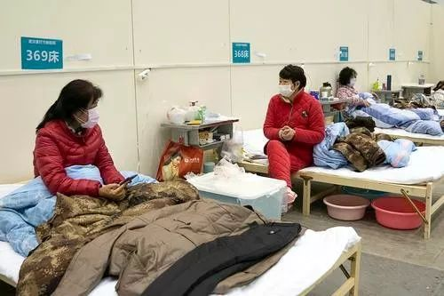

特别报道|艰难的“清零”
原文链接 备份链接 “我们社区的最后一名确诊病人今天终于住进医院，总算完成一项‘清零’任务。”2月13日17时接到电话，武汉江汉区的社区书记王建军长长地嘘出了一口气。 电话是社区一位患病的爹爹从医院打来的，他和患病的老伴在武汉红十字会医院 …


2月14日晚上十一点多，高师傅和其他五位护工终于不再无“家”可归。
曾经的“家”是在医院，他们所照顾的病人病床旁的折叠床上。作为武汉中心医院南京路院区的一名护工，高师傅一天24小时都在医院。春节那三天会有三倍工资，所以很多人像高师傅一样放弃了回家的机会，选择留下来陪护病人，“这是百年不遇的事情，谁知道会有这个事情呢（疫情）？”
正月十五，因为同病房的一位病人确诊为新冠肺炎，整层楼的病护都进行了隔离，连高师傅所陪护的老人也一并确诊，这时，她已经来不及想太多，因为医院开始给护工下达离院通知，让他们尽快离开。
离开之后去哪里？医院没说，他们也不知道。
2月13日，同一家医院里另一位护工吕师傅也做了肺部CT检查，报告显示肺部有异常，但还未确诊。那晚62岁的她靠着医院外墙过了一夜，楼下还站有不少仍在徘徊的护工，他们有些或已经出现了被感染的症状，有些暂时无恙，但是困惑仍然是一致的，有护工说道：“我在医院做了十几年护工，天天就住在病人旁边，现在也没办法种田，离开了医院我没有地方去。”

“就算是居家隔离，也没有家”
师傅，是护工之间互相称呼彼此的习惯用法，不分男女。
高师傅是湖北孝感人，住在汉川的刁东农场，那里有着大片大片的棉花基地，在服装厂、泡沫厂都做过以后，她觉得每个月两千多块的工资还是太少。
2016年，高师傅跟家里一个嫂嫂来到武汉，经家政中介介绍到武汉市中心医院给一位退休治疗的老干部当了护工。以前一天12小时的上班时间对她来说太少了，挣不够钱，“在医院能做24个小时，工资比汉川高一些。”

去年一年，高师傅只回家了两次，一次因为有老人去世待了九天，另一次只待了两天。
“腊月二十几号的时候看很多人在上边说华南海鲜市场有了什么病，当时没有当回事。”
过了几天，护士长跟她们说不要出去，不要到处串病房。初三初四的时候，自己认识的两个护工发烧，去检查以后发现被感染了。高师傅也开始怕了。当时经常进出病房的一位家属开始头晕，“我给她发微信说你赶紧去检查啊，现在蛮多人病了。”
朱清清是高师傅照顾的老人的女儿，她回忆说过年后病房里已经有老人持续在发烧，核酸检测做完结果不好，转移马上就开始了。
转到隔离病区后，医院安排病人陆续接受了CT检测和核酸检测。高师傅担心自己也被感染，就和朱清清沟通给自己也做一次。
CT结果显示高师傅肺部有一些阴影，可能与之前得过肺结核有关，并没有做新冠肺炎方面的诊断。第二天朱清清给高师傅送来一些药，让高师傅做预防。

病人家属给高师傅买的药
当时武汉已经封城数天，高师傅说要是以前还能让儿子来接她回家，现在也回不了家，离开医院也是流落街头，没有去处。
另一边，朱清清的母亲已经92岁，去年生了一场大病以后处于完全失能状态，身边离不开人照顾。跟家人商量后，高师傅决定留在隔离病区继续照顾老人。
此时医院已经开始要求隔离病区的护工离开。
而高师傅照顾的老人核酸检测结果也出来了，显示阳性。但这依然没有动摇她要继续留在医院的想法：“照顾老人还有地方住啊。之前有一个护士长来通知我们去发热门诊打针，我说我们也不发烧，人家怎么会收我们看这个病？有的护工下去几天了，都不发烧，没办法给你治，没吃没喝的，都在大厅里坐着。”她担心下去后就再也回不来了。
对于目前的处境，吕师傅只是无奈，“我们也不懂啊，现在也没人管你。家里人也没有办法，他们也来不了”，“想着得了（新冠肺炎）就这样吧”，有药吃就行。
“因为护工的意愿在那里，现在在医院也是一个隔离的状态，你把她赶出去，她怎么办呢？她们属于密切接触感染者，就算是居家隔离，也没有家啊。”高师傅已经护理朱清清的母亲三年，“他们家姑娘蛮好啊，对我蛮好，像亲姐姐一样”。朱清清和身在外地的儿子一起，开始帮助高师傅和其他五位护工争取找到落脚的地方。

疫情下的流动人口
朱清清和护工口中所经常提到的“陪护中心”，其实是一家政中介。
中介的作用是为护工和病人家属之间搭建联系，签署一份协议后，他们就会从中收取家属的中介费和护工的管理费。“我们介绍他们（护工）上岗。”而经由家政中心介绍上岗的护工们与家政中心并没有劳动合同。
所以，尽管护工由中介“派出”，又长期扎根在医院里，但他们其实不属于任何一方，在疫情这样的节点，成为了漂泊无依的人。
负责人说，他在知道了护工被要求离开医院的情况后，已经和家属一起协助他们做了CT检查，并且跟社区、街道和相关部门打电话，“打了很多”，“社区说这些护工不在他们的辖区内，没办法登记”，一开始，街道称要确诊核酸阳性才给登记，但是后来考虑到他们都没有住址，并且看到了CT报告结果，就都登记上了。
如今在武汉，在街道进行了登记才有了确诊和进一步治疗的可能。
一元街道的负责人告诉记者，武汉市中心医院南京路院区确实在他们的辖区范围内，但是护工的数量很多，而且护工既不在辖区住，户口也不在社区，属于流动人口。
社区的居民数量很多，而街道的床位和医疗资源也十分紧张。“所以之前跟医院联系看能不能通过医院，让生病的得到治疗。社区的居民很多，如果是送到社区，等的时间会比较长。但是医院说护工也不是他们聘请的，医院的资源也很紧张。”目前，一元街道只能先将六位护工的资料登记在社区，按照社区的分类标准向上申报。

记者此前曾向武汉市中心医院南京路院区询问情况，院方称目前医院已被征收，对于护工问题需要了解一下才能答复，截至发稿未得到医院方回复。情人节当天，高师傅收到一位记者发来的微信，让他们带好身份证件和行李到江岸区胜利街的城市快捷酒店先住下来。“尤其是被子，酒店有房间，但没有被子。”终于在这天结束之前，六个人找到了暂时的落脚点。
他们住进的是一个临时观察点，并不配备医护人员。志愿者团队得知这一情况，给护工们提供了线上买药链接，但是线上买药对于年岁已高的护工们来说并非易事。并且，很多药物需要遵医嘱服用，那些只拿到CT检测结果，因为长期缺乏社会经验而操着一口方言的护工们，很难和医生详细沟通，听取他们线上的意见。这些，成为了下一步的难题。
除了已经被通知离开的高师傅们，其实还有一些坚守在医院非隔离区的护工们。
李师傅就是一位还在非隔离区护理病人的护工，李师傅说除了几位病人已经退院的护工离开了，自己和同楼层的其他护工仍然在照顾病人。“我们目前还是安全的，医院没说让我们走。”但她要是到了不得不离开医院的一天，也许会面临着相似的处境。
早日获得治疗，或者能去到方舱医院，成为受感染的护工们的希望。
（文中人物为化名）
作者 | 张晓慧
排版 | CAT
图片 | 部分来源于网络
南风窗新媒体出品
_
_

_
_


点击购买最新一期《南风窗》
点在看让理性的声音传得更远

原文链接 备份链接 “我们社区的最后一名确诊病人今天终于住进医院，总算完成一项‘清零’任务。”2月13日17时接到电话，武汉江汉区的社区书记王建军长长地嘘出了一口气。 电话是社区一位患病的爹爹从医院打来的，他和患病的老伴在武汉红十字会医院 …
原文链接 备份链接 **【财新网】（记者 萧辉 包志明 高昱 ）** “我们社区的最后一名确诊病人今天终于住进医院，总算完成一项清零任务。”2月13日下午5点接到电话，武汉江汉区的社区书记王建军长长地吁出了一口气。 电话是社区一位患病 …
原文链接 备份链接 *************▲*************2月9日，医护人员在雷神山医院了解新冠肺炎患者病情。（新华社 高翔/图） 全文共4438字，阅读大约需要10分钟。 只要有病人，就有工作，一旦丢失了客源，也就失 …
原文链接 备份链接 经济观察网 见习记者 陈月芹 1月29日凌晨3点，家住武汉硚口的李馨（应受访者要求，李馨为化名）在微博、知乎等社区平台上求助：“我不知道怎么样才能排到一个珍贵的床位，为什么明明说好接收所有疑似病人，现实却是辗转求医，没 …
原文链接 备份链接 图片来源：pexels “ 社区检测对甄别传染性呼吸道疾病是一种高效且易于接受的方法，不仅能敦促患者自我隔离，同时减少医院病床占有率，缓解救护车的压力。 ” 新型冠状病毒的高传染性让所有国家严阵以待。为了避免过多人前往 …